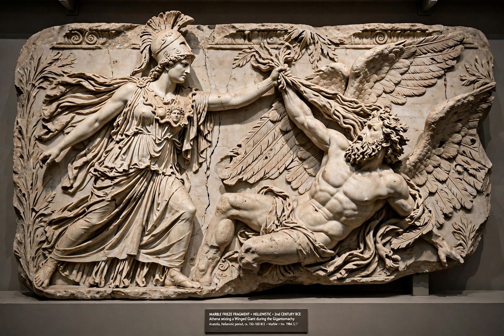

From Wikipedia, the free encyclopedia
| Pergamon Altar | |
|---|---|
| Created | c. 180–160 BC |
| Commissioned by | Eumenes II of Pergamon |
| Current location | Pergamon Museum, Berlin |
The Pergamon Altar (Ancient Greek: Βωμὸς τῆς Περγάμου) is a monumental construction built during the reign of the Attalid king Eumenes II in the first half of the 2nd century BC on one of the terraces of the acropolis of the ancient Greek city of Pergamon in Asia Minor (modern Bergama, Turkey). The structure is 35.64 metres (116′ 11″) wide and 33.4 metres (109′ 7″) deep; the front staircase alone is almost 20 metres (65′ 8″) wide.

The altar stands on a high podium surrounded by a colonnade. Around the podium runs the Great Frieze, nearly 120 metres long and 2.3 metres high, depicting the Gigantomachy — the battle between the Olympian gods and the Giants. A smaller inner frieze depicts the life of Telephus, legendary founder of Pergamon.
The frieze is considered one of the masterpieces of Hellenistic sculpture: figures such as Athena seizing the giant Alcyoneus by the hair while Gaia rises from the earth plead for her son's life. The dramatic, deeply-carved figures were a canonical reference for later art.
German engineer Carl Humann rediscovered the altar in the 1860s–70s; formal excavations began in 1878 under an agreement with the Ottoman Empire. The altar was reconstructed in Berlin's Pergamon Museum, opened in 1930. The Pergamon Altar hall has been closed for renovation since 2014 as part of the museum's general refurbishment, with reopening expected in the late 2020s.
See also: Museum Island, Pergamon.